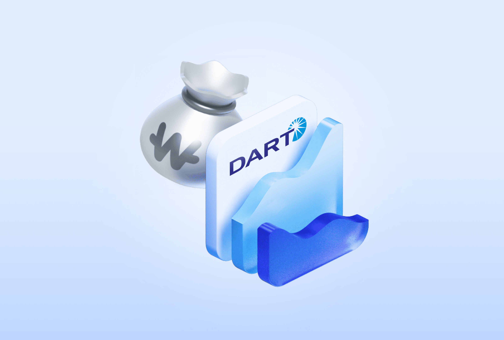
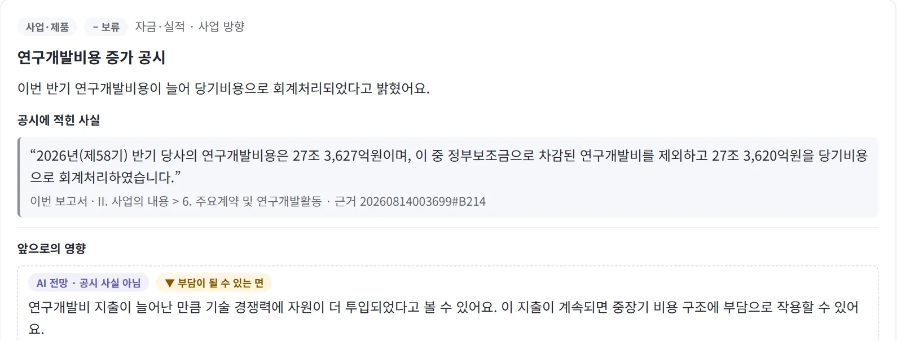

과거와 현재를 이어, 미래를 개척한다
두 보고서 사이, 바뀐 것만. 원문 근거와 함께.
Agenda
오늘 이야기할 순서
PART 1
왜 만들었나
공시는 무엇이고, 지금은 무엇이 불편한가
01 · Client Domain Guide
공시 = 회사의 공식 생활기록부
"The Board accepted the resignation of Jen-Hsun (Jensen) Huang as President, CEO, and Director, effective immediately."
"이사회는 젠슨 황의 사장·CEO·이사직 사임을 즉시 수락한다."

🇰🇷 금융감독원 DART 우리나라 상장사의 공식 공시가 모두 올라오는 곳🔍삼성전자 기업 개요에서 실제 공시를 볼 수 있어요.
🔍 삼성전자 기업 개요 ➔02 · Background & Pain Points
공시를 둘러싼 두 가지 한계
65만 자
작년 것과 올해 것, 두 권을 나란히 놓고 사람이 비교
AI Hallucination: 출처 없는 날조와 신뢰할 수 없는 AI 요약
DART Insight
⚖️ 기업을 검색하고 보고서 두 개를 고르면 바로 비교해 볼 수 있어요.
직접 비교해 보기 ➔PART 2
무엇을 하나
두 보고서 사이 바뀐 것을, 원문 근거와 함께
03 · Value Proposition
기업 검색부터 원문 비교까지
📍 결과 화면에서 문장 옆 원문 위치를 눌러 보세요. 공시 원문의 그 문단으로 이동합니다.
📍 삼성전자 보고서 비교 ➔04 · Financial Evidence
삼성전자 2025년, 숫자로 보면
2024 → 2025
📊 삼성전자 기업 개요에서 여러 해의 재무 흐름을 직접 볼 수 있어요.
📊 삼성전자 재무 흐름 보기 ➔05 · Period Activity
두 보고서 사이 1년, 한 장으로
🗓️ 1년 타임라인 24건 중 6건
- 위험 · 종속회사 Harman, 미국 법무부 벌금
- 위험 · 아산 캠퍼스 사고로 부분작업중지
- 자금 · 임직원 보상용 자사주 2,200만 주 취득 결정
- 위험 · 부분작업중지 해제
- 지배구조 · 정기주총 · 자사주 추가 취득 결정
- 투자 · 국가 AI컴퓨팅센터 컨소시엄 출자 의결
사건마다 공시 원문 근거가 붙어 있어요.

실제 결과 · 삼성전자 반기보고서 2025.06 → 2026.06
📑결과 화면에서 요약의 근거를 눌러 원문으로 가 보세요.
📑 삼성전자 분석 결과 ➔06 · Verification
결과를 내보내기 전, 네 단계 검증
⚖️AI 사용 현황에서 검사 결과와 호출 기록을 볼 수 있어요.
⚖️ AI 사용 현황 ➔07 · Who Uses It
누가, 무엇을 쓰나
👥내 판단 노트에 근거를 모아 보세요.
👥 내 판단 노트 ➔PART 3
어떻게 만들었나
다섯 블록, 한 방향으로 흐르는 구조
08 · Technology Stack
다섯 블록으로 만들었습니다

 화면React · TypeScript
화면React · TypeScript 서비스 APISpring Boot · Java 21
서비스 APISpring Boot · Java 21
 AI 처리FastAPI · LangGraph
AI 처리FastAPI · LangGraph AI 모델Claude (Haiku 기본)
AI 모델Claude (Haiku 기본) 데이터MariaDB · Flyway
데이터MariaDB · Flyway09 · System Architecture
요청은 한 방향, 책임은 한 곳에
PART 4
어떻게 일했나
사람, AI, 자동화의 역할을 나눠서
10 · AI Native Way of Working
사람, AI, 자동화 영역을 나눴습니다
일곱 단계, 단계마다 누가 하나
역할을 이렇게 나눴습니다
사람
- 무엇을 왜 만들지(성공 기준·범위)
- 기획서·설계 기록 최종 확인
- 커밋·PR·병합 결정
AI
- 기획서·이슈·설계 기록 초안(스킬)
- 코드와 테스트 작성
- 다른 AI와 교차 검토
자동화
- 자동 테스트 약 4,400개
- 접근성 검사(axe-core)
- 계층 규칙 검사(ArchUnit)
🌟 DART Insight를 직접 써 보세요.
🌟 첫 화면으로 ➔LIVE DEMO
두 보고서 사이, 바뀐 것만. 원문 근거와 함께.